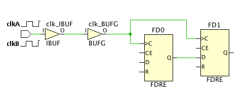

物理的に排他的なクロック グループの理解
図: 物理的に排他的なクロック グループの例 :

この例では、clkA および clkB という 2 つのプライマリ クロックが同じ入力ポート clk に定義されています。clkA と clkB は同時にアクティブになることはできないので、これらのクロック間のタイミングが解析されないように、2 つのクロック間に物理的に排他的なクロック グループが定義されています。
set_clock_groups -physically_exclusive -group clkA -group clkB
デザインに BUFG のファンアウトのクロックを修正するロジックが含まれる場合は、これらの生成クロックにもクロック グループ制約を適用した方が安全です。次はその例です。
set_clock_groups -physically_exclusive \
-group [get_clocks -include_generated_clock clkA] \
-group [get_clocks -include_generated_clock clkB]
[Physically Exclusive Clock Groups] ページの理解
- [Recommended Constraints] : タイミング制約ウィザードでは、同じソース ポイントを共有するクロックが識別され、同じクロック ツリーに伝搬され、クロック乗せ換えパスの不必要なタイミング解析がされないようにするためのクロック グループ制約が推奨されます。
- [Tcl Command Preview] : 物理的に排他的なグループを定義するのに使用される set_clock_groups コマンドが表示されます。これらの制約がデザインに追加されます。
- [Existing Constraints] : 現在定義されている制約が表示されます。
上記のセクションにはそれぞれツールバーもあり、次のコマンドの 1 つまたは複数を実行できます
 |
Search | 検索文字列を入力するためのテキスト入力フィールドが表示されます。 |
 |
Select All | 推奨される制約すべてを選択します。 |
 |
Clock Networks | 新しいクロック ネットワーク レポートを生成する [Report Clock Networks] コマンドと既存レポートを開く [View Clock Networks] コマンドを実行するためのサブメニューが表示されます。 |
関連項目
| 『UltraFast™ 設計手法ガイド (Vivado® Design Suite 用)』 (UG949) の「クロック グループおよび CDC 制約」 | |
| 『Vivado Design Suite ユーザー ガイド : 制約の使用』 (UG903) の「クロック グループ」 | |
 |
Vivado Design Suite QuickTake ビデオ : 高度なタイミング例外 – クロック グループ制約 |